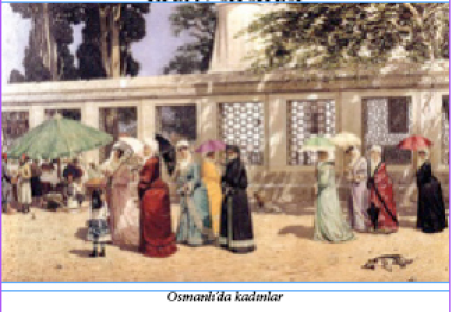
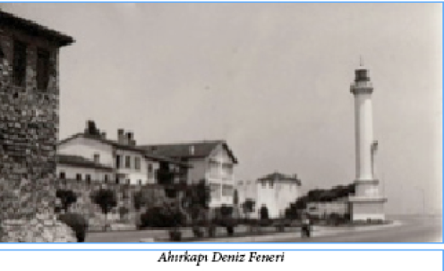

KAZARA İDAMDAN KILPAYI KURTULUŞ
Sultan IV. Mehmet döneminde, 1655 yılında Kara Murat Paşa yeniçeriyi tahrik ederek Sadrazam İpşir Mustafa Paşa ile Şeyhülislâm Esat Efendizâde Ebu Sait Mehmet Efendi’nin idamını hazırlamıştı. Araya giren devlet adamları şeyhülislâmın affedilmesini sağladılarsa da İpşir Paşa’nın idamına engel olamadılar. Sadrazam ve şeyhülislâm zindanda idamlarını beklerken Bostancıbaşı geldi ve Şeyhülislâm affedildiği müjdesiyle zindandan çıkarıldı. Bu arada sadrazamın idamından önce, Mahmut Efendi isminde bir molla dini telkin için zindana, sadrazamın yanına gönderildi. Fakat şeyhülislâmın affedildiği cellâtlara bildirilmediği için zindana gelen cellâtlar karşılarında iki kişi görünce birini şeyhülislâm, diğerini sadrazam zannederek kızılcık şerbetlerini ikram edip boğmak üzere üzerlerine atıldılar.
Cellâtların kemendine teslim olan İpşir Paşa boğulduktan sonra sıra şeyhülislâm sandıkları adama gelmişti, ama Molla Mahmut Efendi bir türlü teslim olmuyor, bağırıp çağırıyordu. Bostancıbaşı bu duruma şaşırdı: “Sen din adamısın Efendi! Kadere rıza göster, metin ol!”
Bunun üzerine Mahmut Efendi de: “Ben telkine geldiydim. İdamıma gerek ne?” dediyse de cellâtları inandıramadı, “Padişah fermanıdır” deyip kemendi boynuna geçirdiler. Sonunda, seslere koşan muhafızlar gerçeği cellâtlara anlatınca Mahmut Efendi kazara idam edilmekten son anda kurtuldu.
VAKA-İ VAKVAKİYE (KANLI ÇINAR OLAYI)
29 Şubat 1656 günü Hasan Ağa, Şamlı Mehmet Ağa ile Galata voyvodalarından Karakuş Mehmet Ağa, yeniçeri ulûfelerinin dağıtıldığı gün, Girit Seferi’nden dönen yeniçerinin dağıtımdan pay alamamaları ve kapıkulu ocaklarına da ayarı düşük akçe verilmesini bahane ederek askeri ayaklandırdı. Olay üzerine toplanan ayak divanında Mihter Hasan Ağa söz alarak, henüz genç yaştaki IV. Mehmet’e kendisine karşı olmadıklarını bildiren bir duadan sonra isteklerini anlatarak idamlarını talep ettikleri kişilerin adları yazılı bir defteri padişaha verdi. Padişah listede olanların canlarının bağışlanmasını istediyse de ayaklananlar direndiler. Bunun üzerine Bostancıbaşı istenen kişileri öldürerek cesetlerini ayaklananlara teslim etti. Bu cesetler At Meydanı’na götürülerek orada bulunan çınar ağacına asıldı. Boğdurulanlar arasında Kızlar Ağası, Kapı Ağası, padişahın musahibi ile Valide Kösem Sultan zamanında nüfuzu artan Mülki Kalfa’nın kocası Şaban Ağa da bulunuyordu.
Osmanlı döneminin ünlü ağaçlarından olan ‘Vakvak Çınarı’ Sultanahmet’te, Gülhane Parkı’nın karşısındaydı. Bu olaydan sonra da insanları bu ağaca asarak idam etmek bir gelenek olmuş ve uzun zaman devam etmiştir.
Ayrıca, üzerine cesetler asılmış bu ağacın çeşitli efsanelerde adı geçen, Cehennem’de bulunan ve meyveleri insan kafası olan Vakvak ağacına benzetilmesi sebebiyle Vaka-i Vakvakiye olarak da adlandırılmıştır.
‘TAHT’A MI ÖLÜME Mİ?
Hayatının yaklaşık kırk yılını sarayda bir dairede mahpus olarak geçiren ve Osmanlı tarihinin en uzun veliahtlık süresine sahip olan Sultan II. Süleyman, Kasım 1687’de sonunda Osmanlı padişahı olduğu zaman kendisine bunu tebliğe gelenlerin söylediklerine inanmamış ve tahta götürülürken öldürülmeye götürüldüğünü sanıp çevresindekilere uzun zaman direnmiştir.
II. Ahmet de altı yaşında sarayda bir odaya kapatılmış, bu durumda 43 yıl kaldıktan sonra 49 yaşında tahta çıkmıştı. Asabi bir insandı, iyi eğitilmemişti. Tahta çıktığı zaman cülus duası edilirken vezirlerindeki hoşnutsuzluğu hissedip bağırmaya başladığı kaydedilir: “Bre Allah’tan kokmaz, sakalından utanmaz adamlar! Beni bu hale getirinceye kadar hapsettiniz, şimdi saltanatıma burun kıvırmak haddinize mi!”
DÜNYANIN İŞİNE BAK!
17. yy başında yaşamış ulemadan ve Sultan I. Ahmet Han’ın şeyhülislamlarından “Çelebi Müftî’’ ismiyle meşhur Hocazade Mehmet Efendi bulaşıcı hastalıklardan çok korkan bir adamdı. Onun bulunduğu yerde hastalık ve ölümden katiyen bahsedilmez, kendisi de hiç kimsenin hasta ziyaretine ve cenazesine gitmezdi... İlim sahibi olduğu halde bu kötü huyundan bir türlü kendisini kurtaramıyordu. Bu da artık onun “hastalığı’’ olmuştu... Hatta çevresindekilere, “Bendeki bu huy kötü huydur, bir türlü kendimi kurtaramıyorum. Sakın siz benim gibi olmayın!’’ derdi...
Bir gün, evinin hizmetçilerinden birisi hastalanıp vefat etti. Hocazâde Mehmet Efendi hiç tereddüt etmeden, konağına bir duvarcı ustası çağırdı. Ustaya evin hizmetçisinin öldüğü odanın kapısını örmesini söyledi. Usta kapıya boydan boya duvar ördükten sonra, Çelebi ayrı bir direktif verdi: “Şimdi git bahçe tarafından dolaş ve o odanın duvarını del, naaşı oradan çıkarıp gömsünler. Bu oda bir daha kullanılmasın!”
Ne var ki “sakınılan göze çöp batar” misali, bütün dikkati ve hassasiyetine rağmen Hocazade Mehmet Efendi vebaya yakalanarak vefat etti...
OSMANLI TARİHİNDE RECM CEZASIYLA
ÖLDÜRÜLEN TEK KADIN
İslam’da uygulanan idam biçimlerinden biri de recm edilerek (taşlanarak) öldürülmektir. İslâm’a göre bir Hristiyan’la ilişkide bulunduğu kesinlikle tespit edilen Müslüman kadınların bu cezaya çarptırılmaları gerekirdi ki, bütün imparatorluk tarihi boyunca yalnız tek bir kadın bu suçla suçlanarak recmedilmişti. Recm olayı Merzifonlu Kara Mustafa Paşa’nın sadrazamlığı döneminde, Sultanahmet’teki Yılanlı Sütun yanında infaz olunmuştur. Cellâtlar kadını kolları içerde kalacak biçimde göğsüne kadar toprağa gömmüş ve zavallı kadın halk tarafından taş yağmuruna tutularak linç edilmişti. Reşat Ekrem Koçu’nun belirttiğine göre, eski tarihçilerimiz linç karşılığı “keşkeş etme” deyimini de kullanmışlardır, ancak biz yaptığımız araştırmalarda böyle bir kullanıma hiç denk gelmedik. Belki yöresel bir kullanıştır, belki de elimizdeki kaynağın bir yazım hatasıdır, bilemiyoruz…
ESKİ İSTANBUL’DA İŞKENCE
Eski İstanbul’da canavarlık derecesinde suçlar ve cinayetler işleyenlere canlı yakalanmaları durumunda uygulanan en korkunç cezalardan biri de “balmumları ile teşhir işkencesi” idi. 17. yüzyıl sonlarına kadar uygulanmış olan bu işkencede yakalanan suçlu çırılçıplak soyulup haç şeklinde bağlanıp yere sabitlenmiş iki tahtaya yüzükoyun olarak bağlanırdı. Kaba etleri ve omuz başları cellât tarafından bıçakla oyulan adamın bu dört yarasının her birinin içine bilek kalınlığında, balmumundan yapılma mumlar koyarak yakılır ve çarmıh üzerindeki mahkûm bir deve üzerine konarak, davul zurna eşliğinde sokak sokak gezdirilirdi. Saatler süren bu korkunç işkence sonunda, mahkûmun ölmek üzere olduğu hissedilince çarmıhtan alınır ve bir ağaç dalına asılarak idam edilirdi.
Bu işkencenin bile daha korkunç bir biçimi vardı ki, onda da suçlu çok sert ağaçtan yapılmış, ucu sivri kocaman bir kazığa oturtulur ve omuz başları oyularak içlerine balmumundan mumlar yerleştirilirdi…
AVRUPALILARIN KAHVE İLE TANIŞMASI
1683 yılında Viyana önlerine gelen Merzifonlu Kara Mustafa Paşa şehri alacağından o kadar emindi ki Viyana’yı aldıktan sonra şehirde yapacağı geçit törenini planlıyordu. Bu nedenle, bu büyük merasimde kullanılacak eşyaları Topkapı Sarayı’ndan çıkarttırmış ve yanına almıştı. Müttefik ordusunun başına Polonya Kralı Jean Sobiesky’nin geçmesiyle, Merzifonlu Kara Mustafa Paşa’nın bütün hayalleri yıkılmış oldu. Bunun üzerine her şeyini Viyana surlarının önünde bırakan Kara Mustafa Paşa askerleriyle beraber Belgrad’a doğru çekildi. Geride kalan ne varsa Viyana’yı kurtaran Polonya Kralı Sobiesky’nin oldu. (Bu olayın sonucu olarak, bugün Topkapı’da bile bulunmayan bazı değerli Osmanlı eserleri Polonya müzelerinde sergilenmektedir.)
Bu sırada ilginç bir olay yaşandı: Hazinelerin yanında çuvallar dolusu çekilmemiş kahve bulunmaktaydı. Kahve çekirdeklerini gören Avusturyalılar gördükleri çekirdekleri başka bir şey zannederek “Türkler meğerse keçi pisliği yerlermiş” dediler ve kahve çekirdeklerini imha etmeye çalıştırlar. Daha önce Osmanlı topraklarında yaşamış bir Viyanalı’nın kahve çekirdeklerini fark etmesi ve Avusturyalılara tanelerin ne işe yaradığını anlatması sonucunda Avrupalılar kahveyle tanışmış oldular.
CELLÂT MEZARLARI
Hayatta iken bile çok meşhur bir-ikisi hariç, isimleri dahi bilinmeyen cellâtlar ölümlerinden sonra da mezar taşlarına bile ismi yazılmayan insanlar olmuşlardır. Evlenemedikleri ve insanlar tarafından istenmedikleri için, hayatta iken yapayalnız kalır, öldüklerinde ise adeta aşağılanarak isimsiz mezarlara gömülürlerdi. Bu uygulama belki de mezarlarına bir kötülük yapılmaması için olmuştur. Beddua dışında bir dua da alamazlardı. Halk onları ne kadar sevmezse sevmesin, onların da kendilerini haklı çıkaracak, mesleklerini ifade eden sözleri vardı elbet. Derler ki:
“Hükm-ü Sultan olmazsa, hata gelmez cellâttan”
Cellâtlar birer saray görevlisi, emir kulu olsalar da halk tarafından sevilmezlerdi. Kimse mezarının onlarla birlikte olmasını istemez, bu yüzden de mezarları halkın mezarlarından ayrı olurdu. İstanbul’a ilk karın yağdığı yer olduğuna, son karın da yine oradan kalktığına inanılan ve eski İstanbul’un en uç noktalarından biri kabul edilen Karyağdı Tekkesi’nin 100 m. ilerisindeki Cellât Mezarlığı’na defnedilirlerdi.
O zamanlar burası İstanbul’un uç noktalarından biriydi. Kuş uçmaz, kervan geçmez, kimsenin uğramadığı, doğru dürüst yolu bile olmayan, yabani ağaçlar içinde, ürkütücü bir yerdi. Ömürleri boyunca sarayda görev yapan cellâtlar ölümlerinden sonra buraya gömülürdü. Mezar taşları da yazısız ve şekilsizdi. Hâlbuki Osmanlı mezar taşlarına baktığınızda baş kısımlarından, işaretlerden, sembollerden hangi dönemde yaşamış olduğunu ve hangi mesleğe sahip olduğunu, kadın mı erkek mi olduğunu, hatta ölüm nedenini anlayabilirdiniz. Cellât mezar taşlarında ise ne mesleklerine ne hayatlarına dair bir işaret olmadığı gibi, isimleri dahi yazılı değildir. Hatta mezar taşı olduğu bile belli değildir. 1.5 metre boyunda bir taştan ibarettir sadece. Mezarlarında Türk mezar taşlarının değişmez dileği, “Ruhuna Fatiha” bile yazmazdı.
ÇARŞI HAMAMLARINDA GAYRİMÜSLİMLER
Tanzimat’a kadar memleketimizde uygulanmış eski yasaklardan garip, garip olduğu kadar hazin ve tuhaflarından biri de, çarşı hamamlarına giden gayrimüslimlerin nalın giymekten men edilmiş olmalarıdır. Her nedense, hamama giren gayrimüslimlerin Müslümanlardan ayırt edilmesi düşünülerek, gayrimüslimlerin nalınsız dolaşmaları uygun görülmüştür. Fakat, Müslümanlar da ayaklarındaki nalını çıkarabileceklerine göre, bu da yeterli görülmemiş, bu hamam yasağına bir garip madde daha ilâve edilmiş ve gayrimüslimlere verilecek peştamallara alâmet-i farika olarak birer demir halka takılmıştır. 18. yüzyıl başlarında, III. Ahmet zamanında Sadrazamlığa kadar yükselmiş ve gariplikleriyle ile tanınmış vezirlerden Kalaylıkoz Ahmet Paşa, gayrimüslimler hakkındaki bu hamam yasağına pek gülünç bir ilâvede bulunmuştu; gayrimüslimlerin peştamallarına takılan demir halkları yeterli bir alâmet-i farika görmemiş, halka yerine, gayrimüslimlere verilecek peştamallara birer de küçük çıngırak bağlatmıştı.

ULEMA SİLSİLESİ
III. Selim’e göre ulema sınıfı “kavuk ve cübbeden ibaret cahil sürüsü” idi. Aralarında ‘silsile’ dedikleri bir kıdem cetveli tutuyorlar, ilmi yeterlilik aranmaksızın, sırası geleni terfi ettiriyorlardı. Padişah imtihan sistemini getirince isyan ettiler. Yeni kurulan topçu okulunda yabancı hocaların varlığı da isyana vesile oldu: “Müslüman çocuklara gâvur kamçısı altında talim reva mıdır?” diyerek yeniçerileri ayaklandırdılar. Padişah, Alemdar Mustafa Paşa Olayı sırasında, yeni padişahın adamları tarafından 28 Temmuz 1808 tarihinde öldürüldü. Cenazesi, Laleli Camii avlusunda, babası Sultan Üçüncü Mustafa’nın yanına defnedildi.
DÜNYANIN İLK DENİZALTISI
OSMANLI’DA YAPILMIŞTI
1719 (Hicrî: 1132) yılında Lâle Devri’nin padişahı III. Ahmet; Süleyman, Mehmet, Mustafa ve Bayezit isimlerindeki dört şehzadesi ile İstanbul’dan 5000 fakir çocuğu sünnet ettirmişti. Türlü eğlenceler ve cidden dikkate değer sahnelerle dolu bu muhteşem düğün Okmeydanı’nda olmuş ve on beş gün on beş gece sürmüştü. Devrin sadrazamı da Nevşehirli Damat İbrahim Paşa idi ve düğünün azamet ve ihtişamında onun büyük rolü olmuştu. Düğünü görmeye gelen seyircilerin kayıkları o kadar çoktu ki, denizin yüzeyi kayıkla örtülmüştü, kürekleri kıpırdatmanın bile olanağı yoktu. Gemilerin üstü ise mahşer gibi doluydu.
O gün, deniz eğlenceleri sırasında eski Mimarbaşı İbrahim Efendi’nin timsahı binlerce insanı hayrete düşürdü. İbrahim Efendi tarafından yapılan bu timsah sureti üç tane kürekli sandal büyüklüğünde idi. Üst çenesini açıp kapayarak deniz yüzeyinde yarım saat kadar dolaşmış, sonra denize dalmıştı. Zevkle seyredilen bu timsah çok takdir edilmişti. Fakat bir saat sonra battığı yerden tekrar deniz yüzüne çıkınca, takdirlerin yerini büyük bir heyecan ve hayret almıştı. Açılan ağzından rengârenk giysili beş tane dansçı fırlamış, timsahın sırtına binerek dans etmeye başlamışlardı.
İbrahim Efendi’nin 18. yüzyıl başında yaptığı bu timsahı dünyanın ilk denizaltısı olarak kabul etmek mümkündür.
İLK TÜTÜNCÜ LONCASI
Osmanlı döneminde ticareti yasak olduğu için tütün satıcılığı bir ocağa bağlanamamıştı. Bu işle hemen tamamı Yahudi olan tüccarlar ilgilenirdi. Memleketimizde henüz tütün ziraatı başlamadığından, tütün İngilizler ve Hollandalılar tarafından getiriliyor ve çok pahalıya satılıyordu. Yahudi tütüncüler tütünün fiyatını düşürmek herkes tarafından kullanılabilmesini temin edebilmek için, içine çınar yaprağı, armut kurusu, incir yaprağı vs. katarlar, bal ve pekmezle ıslatıp özel bir koku verirlerdi. Böylece kendi kârları da çok fazlalaşırdı; ancak 1725 (Hicrî: 1138) yılında tütüncüler bir esnaf loncası teşkilatına bağlandı ve kendilerine bir kâhya tayin edildi. İlk tütüncüler kâhyası Mustafa Çelebi isminde has tütünden anlayan zamanının namlı bir tiryakisidir.
ESKİ İSTANBUL’DA
KADINLARA KONAN BİR YASAK
Bu yasak, İstanbul’un pek muhteşem ve cazip bir lüks

ve sefahat devri yaşadığı Lâle Devri’nde, Nevşehirli Damat İbrahim Paşa Sadareti’nde, 1725 (Hicrî 1138) yılında çıkmıştır ki bugünkü yazılı dilimize çevrilmiş en mühim kısımları aşağı yukarı şudur:
“Allah her türlü belâ ve afetten korusun, İstanbul, Osmanlı ülkesinin yüzü suyudur. Ulema, temiz insan, edepli insan beldesidir. Ahalisinin, tabaka tabaka tespit edilmiş kıyafetleri vardır. Hal böyle iken bazı yaramaz avratlar halkı baştan çıkarmak kastıyla sokaklarda süslü püslü gezmeye, kâfir avratlarını taklit ederek başlıklarına acayip şekiller yapmaya başlamışlar. Terbiyeyi tamamen kaldıracak mertebede kıyafetler uydurmaları önceden de yasaklanmış iken namus perdesini tekrar kaldırmaktan korkmamaları, türlü türlü kötü kıyafetlerle dolaşmaları, birbirini görerek ismet ehli hatunları da baştan çıkarmak mertebelerine varmıştır. Irz ehli ve ismet sahibi kadınlar, kocalarını kendilerine bu yeni çıkma elbiseleri almaya zorlamakta imiş. Kudreti yetmeyenler veya yetip de karılarının bu sonradan çıkma kıyafetlere bürünmelerine rızası olmayanlar, karılarından ayrılma derecelerine varmışlar… Bu garip kıyafetler yasaktır. Kadınlar bundan böyle büyük yakalı feracelerle sokağa çıkmayacaklardır. Feracelerinde süs olarak bir parmaktan kalın şerit kullanmayacaklardır… Kadınlar sokaklarda veya mesirelerde yeni çıkma büyük yakalı feracelerle görülürlerse, feracelerinin yakaları o anda alenen kesilecektir, uslanmayıp ısrar edenler olursa, ikinci ve üçüncü seferinde yakalanıp İstanbul’dan taşraya sürgün edileceklerdir. Bu husus mahalle imamları vasıtasıyla bütün İstanbul kadınlarına tebliğ olunsun… Yaramaz avratlara uymak yüzünden sokakta elbiseleri yırtılarak masumluk perdelerinin lekeleneceği ırz ehli hatunlara anlatılsın…”
Bunları diken terzilere ve şeritçilere de tembih olunsun… Bu yasağın tatbikine Yeniçeri ağası memur edilmiştir… Asla göz yumulmasın, merhamet edilip himaye yolu tutulmasın… Yasak gereği gibi tatbik olunsun…”
MANAV GÜZELİ YUSUF
18. yüzyıl ortalarında Osmanlı sarayında Valide Sultan olarak kırk yıla yakın saltanat sürmüş ve göz kamaştıran bir lüks içinde yaşamış olan IV. Mehmet’in annesi Turhan Sultan, Ukraynalı bir köylü kızı idi. Dokuz on yaşlarında Tatarlar tarafından kaçırılmış ve Osmanlı sarayına Süleyman Paşa isminde bir vezir tarafından takdim edilmişti. Turhan Sultan gayet narin yapılı, zarif ve harikulâde zeki bir kadındı. Esirciler eline düştüğü zaman köyünde bir yaşında bir erkek kardeş bırakmıştı. Bu güzel çocuk da sekiz-dokuz yaşında iken Tatarlar tarafından çalındı ve İstanbul’da bir manava satıldı. Yusuf adı verilen ve Müslüman olan bu çocuğun sahibi manav, onu bir baba sevgisiyle bağrına basmıştı. Yusuf büyük şehirde “Manav Güzeli” lakabı ile bir şöhret bulmuştu. Bir gün bu dükkânın önünden geçen Valide Sultan manav güzelini uzaktan görür görmez kardeşi olduğunu tanıdı ve maiyetindekilere emir vererek çocuğu adeta zorla saraya kaldırttı. Bu çocuğu kundaktayken bir kurt ısırmıştı ve hayvanın diş yerleri Manav Güzeli’nin sağ kalçasında hâlâ nişan olarak duruyordu. Valide Sultan kardeşini bulunca sevincinden çılgına dönmüştü. Ona bir baba şefkati gösteren manavı ihya etti. Yusuf’a da devrin kıymetli hocaları elinde ciddî bir tahsil yaptırttı, fakat devlet işlerine karıştırtmadı, kendisine kâhya tayin etti. Manav Güzeli ölünceye kadar İstanbul’da zengin ve kibar bir hayatı sürdü.
ARNAVUT TELLÂKLAR
1730 (Hicrî 1143) yılındaki Patrona Halil ayaklanmasına kadar İstanbul hamamlarındaki tellaklar büyük çoğunlukla Arnavut’tu. Bu ihtilâlde askerden önce silaha sarılmış olan İstanbul’un baldırıçıplak ve ayak takımının başına geçen Arnavut Patrona Halil, Beyazıt Hamamı’nda çalışan bir tellaktı. Lakabı bir Patrona18 gemisindeki hizmetinden gelen Halil’in ihtilâlin arifesinde hükümetin dikkatini çekmemek için ayakdaşlarıyla beraber bir hamamda toplandıkları ve geceyi orada geçirdikleri söylenir. Bu tarihten itibaren, mevcutlar ölüm veya herhangi bir sebeple tellaklıktan ayrıldıktan sonra, 1918 yılına kadar İstanbul hamamlarına Arnavut milletinden tellâk sokulmamıştır.
18 Patrona: Osmanlı Devleti’nde, tümamirale yakın bir deniz subaylığı unvanı.
KADINLARDAN VE MÜZİKTEN
NEFRET EDEN PADİŞAH
III. Osman tarihimizde kadından nefreti ile tanınmış bir padişahtır. Sarayda dolaşırken cariyelerle karşılaşmak istemediği için ayakkabılarının altına demir kabaralar taktırmıştı. Kabaralardan çıkan sesi duyan cariyeler padişahın geldiğini öğrenip yoldan çekiliyorlardı. Bu padişah müzikten de nefret ettiği için, bütün müzisyenleri saraydan uzaklaştırmıştır.
AHIRKAPI DENİZ FENERİ
Ahırkapı Deniz Feneri 1755 yılında III. Osman tarafından yaptırılmıştır. İstanbul Boğazı’nın Marmara’ya bakan kısmının Batı kıyısındadır. Beyaz, kule şeklinde olan fener, İstanbul’u çeviren surların burçlarından birisinin üzerine oturtulmuştur. Denizden yüksekliği 40 metredir. Her altı saniyede bir yanıp sönerek gece karanlığında denizcilerin yön bulmalarına ve gemilerin karaya oturmamalarına yardımcı olur. Bu fener önemli bir deniz kazasından sonra yaptırılmıştır. Bu deniz kazası şudur: 1755 yılında Mısır’a gitmekte olan Hacı Kaptan yönetimindeki bir kalyon fırtınaya tutularak gece vakti Kumkapı’da karaya oturur. Olayı öğrenen Padişah III. Osman ve Sadrazam Sait Paşa derhal Kumkapı’ya giderek kalyon ve denizcilerin kurtarılmasına nezaret ederler. Kurtarılan gemicilerden birisi padişaha şöyle der: “Eğer burada ve surlar üzerinde bir fener yapılsa, uzağa gidip gelen gemiler ışığı görünce yollarını bulurlar.”
Bunun üzerine III. Osman bir fener yapılmasını emretmiş ve Kaptan-ı Derya Süleyman Paşa da Ahırkapı Feneri’ni yaptırmıştır.
KIZKULESİ HAPİSHANE OLMUŞTU
İstanbul’un en bilinen simgelerinden olan Kız Kulesi Osmanlı tarihinde yalnız bir defa ve bir kişi için hapis olarak kullanılmıştır. Burada, 18. yüzyılın namlı vezirlerinden Hekimoğlu Ali Paşa hapsedilmiş ve oradan Kıbrıs’a sürgüne gönderilmiştir.
Tarihimizde kabrine gece yarısı defnedilen tek insan da yine Hekimoğlu Ali Paşa’dır. Kütahya valisiyken, 14 Ağustos 1758 tarihinde ölmüş ve orada defnedilmişti. Ali Paşa hâlâ kendi adıyla anılan büyük bir camii yaptırmıştı ve ölünce camiinin yanındaki türbesine gömülmesini vasiyet etmişti. Buna izin verildi; Kütahya’daki geçici mezarından çıkarılan naaş Üsküdar’a geldi, fakat halk büyük bir hürmet beslediği bu vezire karşı bir karışıklığa sebep olabilecek şekilde tezahürata hazırlandığından, tabut Üsküdar’dan İstanbul’a gece yarısı geçirildi ve sessizce Fatih’teki türbesine defnedildi.
DAĞ BAŞINDAKİ GARİP MEZARLAR
18. yüzyıl şairlerinden Dolmabahçeli Ahmet Efendi zarafeti, nüktedanlığı ile tanınmış bir zattı. Esmerliğinden ötürü şiirlerinde “Siyahî” mahlasını kullanırdı. Güzel yazı yazar, musikiden anlar, marifetli bir adamdı. Kibar ve rical konaklarındaki yâran toplantılarında aranır, beklenir, sohbete katılımı da meclislere bir parlaklık verirdi. O dönemin tanınmış ricalinden Kaptan-ı Derya Küçük Kılıç Ali Paşa, Siyahî Ahmet Efendi’nin velinimeti, hamisiydi. Paşa Trabzon valisi olunca Siyahî Ahmet Efendi’yi de beraber götürdü. Boğaz’dan çıktıktan az sonra bindikleri küçük gemi müthiş bir fırtınaya tutuldu, güçlükle Ağva sahillerine sığındılar. Kırda çadır kurup denizin yatışmasını beklerken Siyahî ile arkadaşları etrafta bir gezintiye çıkmışlardı. Dağ başında, ıssız bir köşede birkaç mezar gördüler; şair güldü, mezarlara hitaben: “Hey biçareler! Şile kasabası buraya yakındır, ne vardı burada ölecek! Biraz dişinizi sıkıp daha şenlikli bir yerde gömülseydiniz ya!” dedi. Fakat çadırına döner dönmez müthiş bir titreme ile yatağa düştü ve o gece öldü. Arkadaşları Siyahî Ahmet Efendi’yi götürüp o dağ başındaki mezarların yanına gömdüler.
KÖÇEKLER
İstanbul’un en namlı köçekleri meyhanelerde oynatılırdı; hemen her meyhanenin de namlı bir köçek oğlanı bulunurdu. Meyhane köçekleri için rind şairlerinin kaleminden çıkmış çok güzel manzumeler ve destanlar vardır. Bunların içinde İsmail ve “Benli” lâkabı ile meşhur Dimetokalı Ali adında iki Çingene genci, İstanbul’un en büyük şöhretleri olmuşlardı. Şair Enderunlu Fazıl da 19. yüzyıldaki meyhane köçekleri için “Çenginame” adında manzum bir eser kaleme almıştır: Şairin rind bir üslûbla methettiği meyhane köçekleri, Büyük Âfet, Küçük Âfet, Pandeli Andon, Panayot, Yasemin, Mısırlı Güzeli, Lâtif, Hilâlkaş, Mehtab, Altıntop, Taze Fidan, Zernişan, Ziba, Yıldız, Kanarya, Kız Mehmet, Kıvırcık, Fıstık, Elmaspare, Ceylân, Afitab, Gazab, Velvele ve Tikidir… Köçeklerin bir kısmı Adalı, bilhassa Sakız Adalı Rum gençleri, bir kısmı Ayvansaray’ın loncasından yetişmiş Çingene gençleridir. Çoğunun da, asıl isimleri unutulmuş, lakapları ile anılmışlardı.
YOKSUL ÖLEN SADRAZAMLAR DA VARDI
5-7 Temmuz 1770 tarihleri arasında yaşanan Çeşme Deniz Savaşı sırasında Kaptan-ı Derya Mandalzade Hüsamettin Paşa’nın yardımcısı olan Cezayirli Gazi Hasan Paşa bu savaşta gösterdiği yararlılıklar nedeniyle kısa sürede yükseldi ve III. Selim döneminde de Cezayirli Gazi Hasan Paşa adıyla sadrazam oldu. Bir lakabı da “palabıyık” olan Hasan Paşa son derece dürüst olmasıyla tanınırdı. Evcilleştirdiği aslanıyla İstanbul sokaklarında gezdiği zamanlarda dönemin fısıltı gazetelerinde her zaman manşette olan Hasan Paşa öldüğü zaman çok az bir mirası olabilecek derecede orta halli bir devlet adamıydı. Osmanlı-Rus Savaşı sırasında sefer masrafları için kendi cebinden 12.000 altın harcayacak kadar vatansever bir askerdi olan Hasan Paşa, aynı zamanda Cezayir Dayısı19 olduğu dönemde ABD ile bir haraç anlaşması imzalamasıyla da ünlüdür.
19 Dayı: Osmanlı döneminde 1671 yılından itibaren seçilerek göreve getirilen Cezayir Eyaleti, Trablusgarp Eyaleti ve Tunus Eyaleti yöneticilerine verilen unvandı.
KÖÇEK ÇİNGENE İSMAİL
I. Abdülhamit döneminde, İsmail adında bir meyhane köçeğinin şöhreti dillere destan olur. Önce Galata’nın batakhane meyhanelerinde görünür, vücut yapısı çok narin, “kişmirî” denilen esmer tenli, karakaşlı, karagözlü, güzel yüzlü, tatlı sözlü bir gençtir.
Aybi ancak bu ki, ol cânâne
(Tek ayıbı vardır o sevgilinin)
Milleti olmuş idi çingâne!
(O da, Çingene milletinden olmasıydı!)
“Her cilvesi canperver, eli ağzına uyar dilber” olan Çingene İsmail Ayvansaray’da otururdu. Gündüz (Evliya Çelebi’nin dediği gibi, “Galata demek meyhane demektir”) Galata’da oynar, akşam oldu mu Balat meyhanelerinde görünürdü. O zamanlar İstanbul’un bu en gürültülü hovarda semtinde, meyhane meyhane dolaşarak dans ederdi. En sık uğradığı yerler de “Servili,” “Sarnıçlı” ve bilhassa “Gümüş Halkalı” ve “Çizmeli” meyhaneleriydi. Kışın, kibar ve zengin konaklarındaki helva sohbetlerine çağrılırdı; düğünler de Köçek İsmailsiz sönük kalacağından, haftalarca evvelinden çok yüksek ücretle peylenir, tutulurdu.
Oyunları ve güzelliği ile İstanbul’da dillere destan olan Köçek İsmail şöhretin bu en parlak devrinde evlenmek ister. İstanbul’da bu dilber oğlana lâyık bir güzel bulunamaz, Edirne’de bulunan güzel bir Çingene kızı bir boz eşek üstünde ve kalabalık bir Çingene alayı ile İstanbul’a getirilir. Dansör damat da gelini İstanbul Çingenelerinden kalabalık bir kafile ile sur dışında karşılar. İstanbul halkından binlerce meraklı da namlı Çingene güzelinin düğün alayını seyretmek için Davutpaşa sahrasına, Davutpaşa’dan Ayvansaray’a giden yollara dökülür… Nikâh Davutpaşa’da
kıyıldıktan sonra, gelin yine boz eşeğe bindirilir ve tantanalı bir alayla Ayvansaray’a götürülür. Köçek İsmail sokaklara sofralar kurdurarak bütün meyhanecilere, akşamcılara, oyunculara ve çalgıcılara büyük bir ziyafet çeker… Afiyetle yenilip içilir… Vakit zevk ve şenlikle gece yarısını bulun. Tam Köçek İsmail gerdeğe girecekken, kız babası bir aksilik çıkarır ve bir tarafta kız tarafı yüzlerce Edirne Çingenesi, diğer tarafta oğlan tarafı Ayvansaray ve Balat Çingeneleri… Bir büyük kavga çıkar. Gece yarısı şamata gökyüzünü tutar, davetliler gülmekten kırılır, bayılıp kaçılır. Fakat davetlilerini danışıklı dövüş olduğu sonradan ortaya çıkan büyük bir Çingene kavgasıyla uğurlayan Köçek İsmail için bu düğün, güzellik ve şöhretinin bir dönüm noktası olur. Eski rağbet ve iltifatı göremez olur… Ayağı meyhanelerden kesilir ve çok geçmez, bu namlı köçek de yüzlerce, binlerce benzeri gibi unutulur.
Ayvansaray düğününden altı yıl kadar sonra Enderunlu Fazıl dostları ile beraber Haydarpaşa çayırına gider… Yanlarına kayış yüzlü, gulyabani heybetli bir ayıcı Çingene gelir. Oyundan sonra uzattığı tefine alay ve hakaretle birkaç mangır atılır… Fakat rind şair, ayıcı Çingene’nin gözlerine dikkatle bakınca, Köçek İsmail’i derhal tanır. Bir dönem İstanbul’u danslarıyla sallayan Çingene İsmail kara suratlı bir adam olmuş, ekmek parası için ayı oynatmaktadır artık… Enderunlu Fazıl ayıcının gözlerindeki bakıştan pek etkilenir ve onun için “Aybi ancak bu ki, ol cânâne / Milleti olmuş idi çingâne!” diye başlayan güzel bir şiir yazar. Enderunlu Fazıl Osmanlı tarihinde toplatılan tek kitap olan “Zenanname”nin de (Kadınlar Kitabı) yazarıdır aynı zamanda…